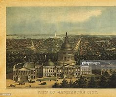

Washington, D.C., D.C. in full District of Columbia, city and capital of the United States of America. It is coextensive with the District of Columbia (the city is often referred to as simply D.C.) and is located on the northern shore of the Potomac River at the river’s navigation head—that is, the transshipment point between waterway and land transport. The state of Maryland borders the District of Columbia to the north, east, and west, and the state of Virginia borders the District on the southern shore of the Potomac River.
Facts about Washinton DC
1.Washington, D.C. is 68 square miles. All of the land was taken from Maryland when D.C. was set up as the seat of the federal government.
2.There is no “J” Street in D.C.
3.Seattle gets less rain per year than Washington, D.C.
4.Franciscan monks built a series of catacombs under the Franciscan Monastery of the Holy Land in America in Washington D.C. Why? Because they couldn’t afford to go to Europe to see the catacombs there.
5.In 1999, vandals were suspected of chopping down four D.C. cherry trees. Turns out, it was just a pair of beavers.
6.D.C. has the second busiest Amtrak Station in the United States, just after New York City.
7.The 1973 film The Exorcist steps are located in Georgetown.
8.Washington, D.C. residents consume more wine per capita than anywhere else in the country.
9.The U.S. Capitol Building dome is made up of 8,909,200 pounds of cast iron.
10.A sculpted head of Darth Vader is located on the northwest tower of the Washington National Cathedral amongst the gargoyles.
History
Founded on July 16, 1790, Washington, DC is unique among American cities because it was established by the Constitution of the United States to serve as the nation’s capital. You can read the actual line at the National Archives. From its beginning, it has been embroiled in political maneuvering, sectional conflicts and issues of race, national identity, compromise and, of course, power.Like many decisions in American history, the location of the new city was to be a compromise: Alexander Hamilton and northern states wanted the new federal government to assume Revolutionary War debts, and Thomas Jefferson and southern states who wanted the capital placed in a location friendly to slave-holding agricultural interests.President George Washington chose the exact site along the Potomac and Anacostia Rivers, and the city was officially founded in 1790 after both Maryland and Virginia ceded land to this new “district,” to be distinct and distinguished from the rest of the states. To design the city, he appointed Pierre Charles L’Enfant, who presented a vision for a bold, modern city featuring grand boulevards (now the streets named for states) and ceremonial spaces reminiscent of another great world capital, L’Enfant’s native Paris. He planned a grid system, at which the center would be the Capitol building.Even before coming of age, DC was nearly completely destroyed. During the War of 1812 against Great Britain, enemy forces invaded the city and burned much of it to the ground, including the newly completed White House, the Capitol and the Library of Congress (including all of its books). Thomas Jefferson later replenished the library’s collection by selling off his entire library for $23,950 in 1815.After the devastation, the city remained small, especially in terms of permanent residents. Soon it would become smaller in physical size as well. In 1847, the portion of the city that had originally belonged to Virginia was retroceded, after the voters of Alexandria elected to leave DC, feeling that they had been left out of development on the other side of the river. You can still see some surviving, original markers for the District today.The city only increased in size as a result of the Civil War. Slaves owned in Washington were emancipated on April 16, 1862, nine months before the Emancipation Proclamation, and it therefore became a hub for freed slaves. After, it remained a home to a significant and vibrant African American population, which included abolitionist Frederick Douglass. A substantial army was set up just to protect the capital during the war, and the federal government grew around this administration.
Top 10 attractions in Washinton DC
Washinton DC is a very beautiful city with many attraction places,below are the top 10 tourist attractions places
1. Lincoln Memorial
The Lincoln Memorial is a US national memorial built to honor the 16th President of the United States, Abraham Lincoln. It is on the western end of the National Mall in Washington, D.C., across from the Washington Monument, and is in the form of a neoclassical temple. The memorial's architect was Henry Bacon
2.National Air And Space Museum
The National Air and Space Museum of the Smithsonian Institution, also called the Air and Space Museum, is a museum in Washington, D.C. It was established in 1946 as the National Air Museum and opened its main building on the National Mall near L'Enfant Plaza in 1976. In 2018, the museum saw approximately 6.2 million visitors, making it the fifth most visited museum in the world, and the second most visited museum in the United States
3.National Gallery Of Art
The National Gallery of Art, and its attached Sculpture Garden, is a national art museum in Washington, D.C., located on the National Mall, between 3rd and 9th Streets, at Constitution Avenue NW. Open to the public and free of charge, the museum was privately established in 1937 for the American people by a joint resolution of the United States Congress
4.United States Capitol
United States Capitol, meeting place of the United States Congress and one of the most familiar landmarks in Washington, D.C. Possibly the most culturally and historically important building in the United States, it has been home to Congress since 1800
5.World war ii Memorial
The World War II Memorial honors the 16 million who served in the armed forces of the U.S., the more than 400,000 who died, and all who supported the war effort from home. Symbolic of the defining event of the 20th Century, the memorial is a monument to the spirit, sacrifice, and commitment of the American people.
6.Jefferson Memorial
Jefferson Memorial, in full Thomas Jefferson Memorial, monument to Thomas Jefferson, the third president of the United States, situated in East Potomac Park on the south bank of the Tidal Basin in Washington, D.C. Authorized in 1934 as part of a beautification program for the nation’s capital, it was opposed by many modernist architects, including Frank Lloyd Wright, who objected to its Classical design. Others objected to the destruction of cherry trees (for which the city was famous) and protested by chaining themselves to trees they thought would be lost; still others feared that the monument would obliterate the spectacular vista of the Potomac River. At the urging of Pres.
7. Washington National Cathedral
The Cathedral Church of Saint Peter and Saint Paul in the City and Diocese of Washington, commonly known as Washington National Cathedral, is an American cathedral of the Episcopal Church. The cathedral is located in Washington, D.C., the capital of the United States. The structure is of Neo-Gothic design closely modeled on English Gothic style of the late fourteenth century. It is the third-largest church building in the United States, and the fourth-tallest structure in Washington, D.C.
8.The White House
The White House is the official residence and workplace of the president of the United States. It is located at 1600 Pennsylvania Avenue NW in Washington, D.C., and has been the residence of every US president since John Adams in 1800. The term "White House" is often used as a metonym for the president and their advisers.The residence was designed by Irish-born architect James Hoban in the neoclassicalstyle.

9.National Zooligical Park
The National Zoological Park, commonly known as the National Zoo, is one of the oldest zoos in the United States. It is part of the Smithsonian Institution and does not charge admission. Founded in 1889, its mission is to "provide engaging experiences with animals and create and share knowledge to save wildlife and habitats".
10.Tidal Basin
The Tidal Basin is a man-made reservoir located between the Potomac River and the Washington Channel in Washington, D.C. It is part of West Potomac Park, is near the National Mall and is a focal point of the National Cherry Blossom Festival held each spring. The Jefferson Memorial, the Martin Luther King Jr. Memorial, the Franklin Delano Roosevelt Memorial, and the George Mason Memorial are situated adjacent to the Tidal Basin